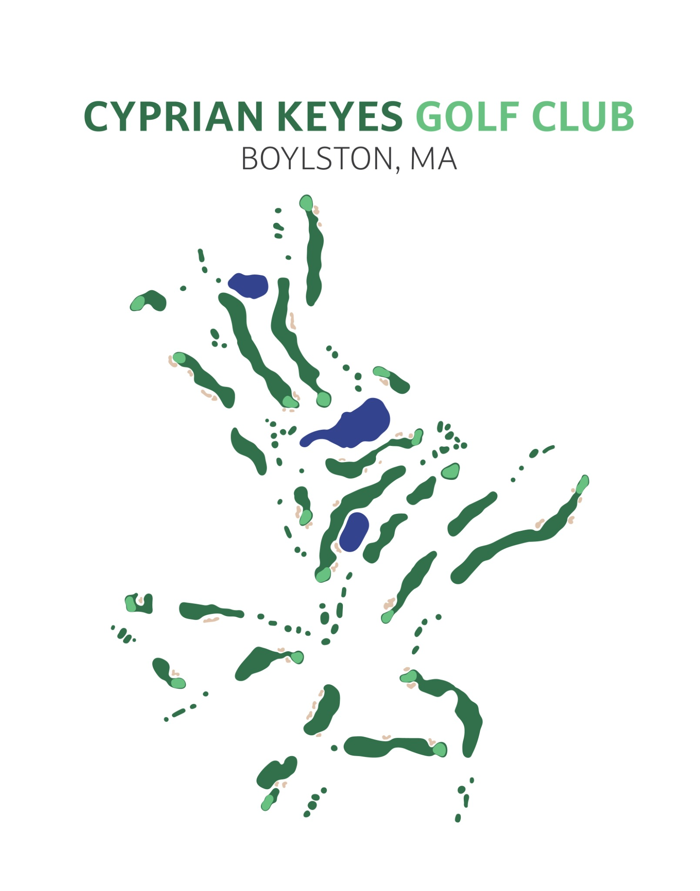
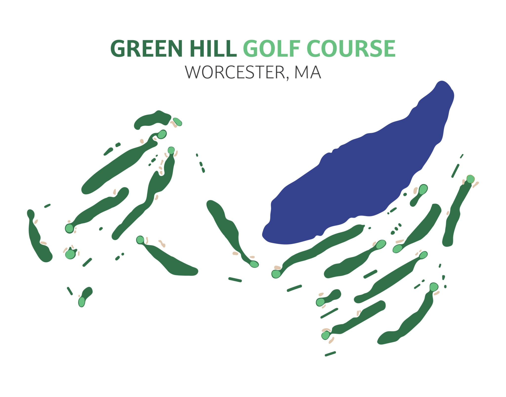
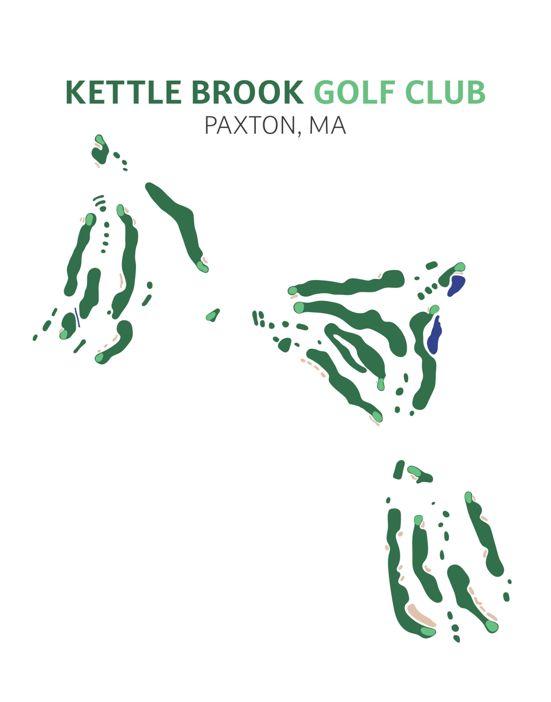
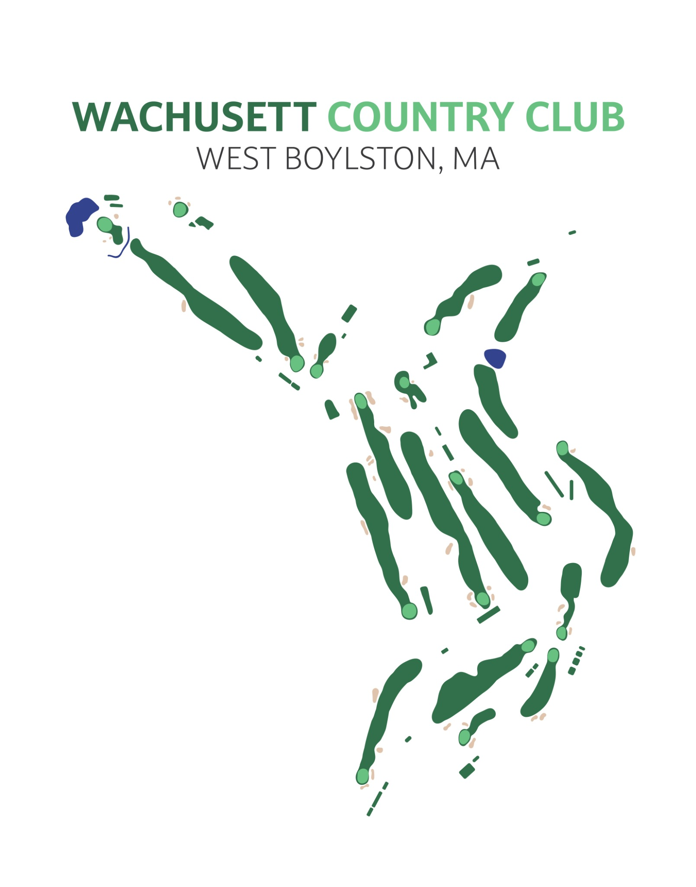

Golf courses are defined by their landscapes, but even the most complex layouts can be reduced to a few recognizable shapes.
Minimalist Golf Layouts is a series of illustrated course maps that strips each course down to its essential features—fairways, greens, bunkers and water—creating a simplified visual representation that remains distinctly recognizable to anyone familiar with the course.
The series currently features Cyprian Keyes Golf Club, Green Hill Golf Course, Kettle Brook Golf Club, and Wachusett Country Club, each illustrated using the same restrained visual system.
Role: Concept, Illustration & Design



